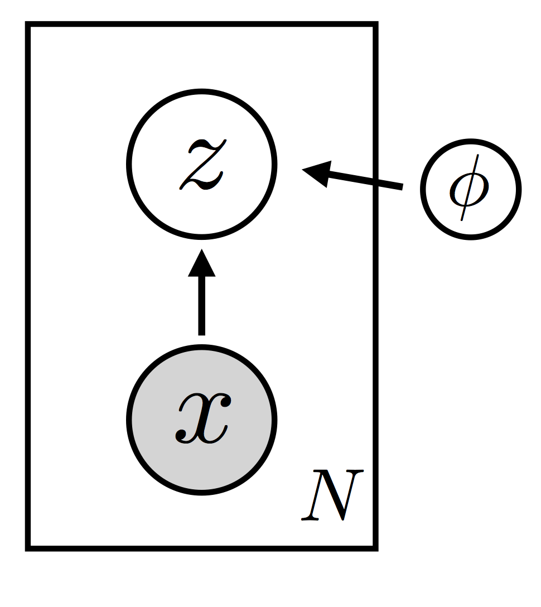

SVI Part III: ELBO 梯度估计¶
本文讲解 SVI 的 ELBO 优化理论，如何得到 ELBO Gradient Estimators。
[3]:
# +++++ 学完本文，您将会看懂如下程序
import os, torch, pyro, sys
import torch.distributions.constraints as constraints
import pyro.distributions as dist
import pyro.optim as optim
from pyro.infer import SVI, TraceGraph_ELBO
from pyro.distributions.testing.fakes import NonreparameterizedBeta
assert pyro.__version__.startswith('1.3.0')
pyro.enable_validation(True)
class BernoulliBetaExample:
def __init__(self, max_steps):
self.max_steps = max_steps
self.alpha0, self.beta0 = 10.0, 10.0
self.data = torch.zeros(10)
self.data[0:6] = torch.ones(6)
self.n_data = self.data.size(0)
self.alpha_n = self.data.sum() + self.alpha0
self.beta_n = - self.data.sum() + torch.tensor(self.beta0 + self.n_data)
self.alpha_q_0 = 15.0
self.beta_q_0 = 15.0
# model: f-> x with prior Beta(10, 10)
def model(self, use_decaying_avg_baseline):
f = pyro.sample("latent_fairness", dist.Beta(self.alpha0, self.beta0))
with pyro.plate("data_plate"):
pyro.sample("obs", dist.Bernoulli(f), obs=self.data)
# guide: with posterior Beta(p, q)
def guide(self, use_decaying_avg_baseline):
alpha_q = pyro.param("alpha_q", torch.tensor(self.alpha_q_0), constraint=constraints.positive)
beta_q = pyro.param("beta_q", torch.tensor(self.beta_q_0), constraint=constraints.positive)
baseline_dict = {'use_decaying_avg_baseline': use_decaying_avg_baseline, 'baseline_beta': 0.90}
pyro.sample("latent_fairness", NonreparameterizedBeta(alpha_q, beta_q), infer=dict(baseline=baseline_dict))
def do_inference(self, use_decaying_avg_baseline, tolerance=0.50):
pyro.clear_param_store()
optimizer = optim.Adam({"lr": .0005, "betas": (0.93, 0.999)})
svi = SVI(self.model, self.guide, optimizer, loss=TraceGraph_ELBO())
print("随机变分推断 with use_decaying_avg_baseline=%s" % use_decaying_avg_baseline)
param_abs_error = lambda name, target: torch.sum(torch.abs(target - pyro.param(name))).item()
for k in range(self.max_steps):
svi.step(use_decaying_avg_baseline)
if k % 100 == 0:
print('.', end='')
sys.stdout.flush()
alpha_error = param_abs_error("alpha_q", self.alpha_n)
beta_error = param_abs_error("beta_q", self.beta_n)
if alpha_error < tolerance and beta_error < tolerance:
break
print("\nDid %d steps of inference." % k)
print(("两个变分参数的最终绝对误差" +
"是 %.4f & %.4f") % (alpha_error, beta_error))
bbe = BernoulliBetaExample(max_steps=10000)
bbe.do_inference(use_decaying_avg_baseline=True)
bbe.do_inference(use_decaying_avg_baseline=False)
# test
随机变分推断 with use_decaying_avg_baseline=True
.....
Did 443 steps of inference.
两个变分参数的最终绝对误差是 0.4413 & 0.4997
随机变分推断 with use_decaying_avg_baseline=False
..........
Did 972 steps of inference.
两个变分参数的最终绝对误差是 0.4996 & 0.4562
数学背景¶
我们定义一个模型分布 \(p_{\theta}({\bf x}, {\bf z}) = p_{\theta}({\bf x}|{\bf z}) p_{\theta}({\bf z})\)，其中 \({\bf x}\) 为可观测变量和 \({\bf z}\) 为潜变量。我们还定义一个指导分布 \(q_{\phi}({\bf z})\)（也就是变分分布）。 这里 \({\theta}\) and \(\phi\) 分别是 model 和 guide 的参数. (In particular these are not random variables that call for a Bayesian treatment).

|
 |
(通过优化 ELBO 来最大化\(\log p_{\theta}({\bf x})\)) We’d like to maximize the log evidence \(\log p_{\theta}({\bf x})\) by maximizing the ELBO (the evidence lower bound) given by
(使用梯度下降法优化 ELBO) To do this we’re going to take (stochastic) gradient steps on the ELBO in the parameter space \(\{ \theta, \phi \}\) (有关此方法的早期工作，请参见参考文献[1,2]). So we need to be able to compute unbiased estimates of
对于一般的随机函数 model() 和 guide() 如何计算估计上面梯度呢? To simplify notation let’s generalize our discussion a bit and ask how we can compute gradients of expectations of an arbitrary cost function \(f({\bf z})\). Let’s also drop any distinction between \(\theta\) and \(\phi\). 问题转化成为了计算：
让我们从最简单的情况开始。
简单情况: 可重参数化¶
假如我们可以进行重参数化：
很关键的步骤是我们把所有参数 \(\phi\) 依赖性移到了期望的内部，其中 \(q({\bf \epsilon})\) 是一个与 \(\phi\) 无关的固定的分布。
[15]:
from graphviz import Source
Source('digraph{rankdir=LR; E -> Z[label=g]; Z -> Y[label=f]}')
# Y = f(Z)
[15]:
数学上 \(Z \sim q_\phi(z)\)，我们找到一个 \(E \sim q(\epsilon)\) 使之满足 \(Z = g_\phi(E)\) 具备分布 \(q_\phi(z)\)。随机变量 \(Y\) 有两个表达式，即$ Y= f(Z)$ 和 $ Y= f(g(\epsilon))$, 所以其期望有两种计算方法，故而 (1) 式成立。
这种重新参数化可以适用许多分布（例如正态分布）；更多详情参见参考文献[3]. 在这种情况下可以交换求梯度和求期望的运算，从而得到：
其中 \(f(\cdot)\) 和 \(g(\cdot)\) 都是充分光滑的函数, 我们现在可以通过对该期望值进行蒙特卡洛估计，来获得感兴趣梯度的无偏估计。
++++ Hint for the next section
Tricky case: 不可重参数化¶
如果我们不能进行上述重新参数化怎么办？不幸的是，许多感兴趣的分布（例如所有离散分布）都是这种情况。在这种情况下，我们的估算器采取一种更复杂的形式.
我们把需要估计的梯度展开：
使用链式法则得到：
此时会遇到一个困难。 我们知道如何从分布 \(q(\cdot)\) 采样，但是 \(\nabla_{\phi} q_{\phi}({\bf z})\) 并不是一个概率密度。 因此，我们需要对这个公式进行 massage (也就是简单变形)，使其以期望 w.r.t. \(q(\cdot)\) 的形式出现。注意到
从而我们关注的梯度期望 \(\nabla_{\phi}\mathbb{E}_{q_{\phi}({\bf z})} \left [ f_{\phi}({\bf z}) \right]\) 可化成
This form of the gradient—variously known as the REINFORCE estimator or the score function estimator or the likelihood ratio estimator—适用于简单的蒙特卡洛估计。
注意，一种方便实现的打包该结果的方式是引入一个替代目标函数：
Here the bar indicates that the term is held constant (i.e. it is not to be differentiated w.r.t. \(\phi\)). 为了获得（单样本）蒙特卡洛梯度估计，我们根据指导分布对潜变量进行了采样，计算替代目标函数，并进行微分。 得到的结果将会是 \(\nabla_{\phi}\mathbb{E}_{q_{\phi}({\bf z})} \left [ f_{\phi}({\bf z}) \right]\) 的无偏估计。 用公式来说就是：
有两个策略可以继续改进, 一个策略是考虑使用特殊结构的损失函数, 另外一个策略是改进梯度方向(像动量法一样).
高方差问题：为什么希望做 MLE Deep Learning
我们现在有了一个通用方法得到损失函数 ELBO 关于参数梯度的无偏估计。不幸的是, 多数情况下，我们的指导分布 \(q(\cdot)\) 包含一些不可重参数化分布时候, 上一节构建的估计量倾向于具有高方差. 实际上在许多感兴趣的情况下，方差是如此之大，以致该 estimator 无法使用。 所以我们需要减少方差的策略 （有关讨论，请参见参考文献[4]）。我们将介绍两种减少方差的策略：
第一种策略是利用损失函数 \(f(\cdot)\) 的内在特殊结构.
第二种策略是利用先前步骤关于 \(\mathbb{E}_{q_{\phi}({\bf z})} [ f_{\phi}({\bf z})]\) 的估计信息来有效的减少方差，它有点类似于动量梯度下降法。
++++ Hint for hte next section
with pyro.plate("foo", data.size(-1)):
ks = pyro.sample("k", dist.Categorical(probs))
pyro.sample("obs", dist.Normal(locs[ks], scale), obs=data)
z = pyro.sample("z", dist.Bernoulli(...),
infer=dict(baseline={'use_decaying_avg_baseline': True, 'baseline_beta': 0.95}))
Reducing Variance via Dependency Structure¶
利用概率图结构，也就是概率分布结构减少方差，本部分内容首先介绍其相关理论，然后给出一个 Rao-Blackwellization 例子。
在上面估计 \(\nabla_{\phi} {\rm ELBO}\) 的讨论中，我们在遇到一般性损失函数 \(f_{\phi}({\bf z})\) 时候卡住了. 我们继续这个思路 (the approach we’re about to discuss is applicable in the general case，but for concreteness let’s zoom back in)。 在随机变分推断的过程中，我们感兴趣的目标函数 \(\mathbb{E}_{q_{\phi}({\bf z})} \left [ \log p_{\theta}({\bf x}, {\bf z}) - \log q_{\phi}({\bf z}) \right]\) 有如下形式：
where we’ve broken the log ratio \(\log p_{\theta}({\bf x}, {\bf z})/q_{\phi}({\bf z})\) into an observation log likelihood piece and a sum over the different latent random variables \(\{{\bf z}_i \}\). We’ve also introduced the notation \({\rm Pa}_p (\cdot)\) and \({\rm Pa}_q (\cdot)\) to denote the parents of a given random variable in the model and in the guide, respectively.
(读者可能会担心 what the appropriate notion of dependency would be in the case of general stochastic functions; 这里我们仅仅指 regular ol’ dependency within a single execution trace). The point is that different terms in the cost function have different dependencies on the random variables \(\{ {\bf z}_i \}\) and this is something we can leverage.
简而言之, 对于任何不可重参数化的潜变量 \({\bf z}_i\)，替代目标 \(\log q_{\phi}({\bf z}) \overline{f_{\phi}({\bf z})} + f_{\phi}({\bf z})\) 中将会如下项
我们发现移除 \(\overline{f_{\phi}({\bf z})}\) 中的某些项之后依然可以得到一个无偏的梯度估计; 更进一步，这样做还能减少方差。具体来说 (see reference [4] for details) we can remove any terms in \(\overline{f_{\phi}({\bf z})}\) that are not downstream of the latent variable \({\bf z}_i\) (downstream w.r.t. to the dependency structure of the guide). 请注意，这种一般性的技巧（通常通过分析处理某些随机变量以减少差异）通常被称为 Rao-Blackwellization 技巧。
在Pyro中，所有这些逻辑都由SVI类自动处理。具体来说就是使用 TraceGraph_ELBO 损失函数, Pyro will keep track of the dependency structure within the execution traces of the model and guide and construct a surrogate objective that has all the unnecessary terms removed:
svi = SVI(model, guide, optimizer, TraceGraph_ELBO())
请注意，利用此随机变量依赖关系信息需要额外的计算，所以 TraceGraph_ELBO 仅应在模型具有不可重参数化的随机变量的情况下使用；而在大多数应用中 Trace_ELBO 就已经够用了.
Rao-Blackwellization 例子¶
假设我门有一个具备 \(K\) components 的高斯混合模型。对于每个数据点，我们 (i) first sample the component distribution \(k \in [1, \dots,K]\); and (ii) observe the data point using the \(k^{\rm th}\) component distribution. 写出这种模型的最简单方法如下：
ks = pyro.sample("k", dist.Categorical(probs).to_event(1))
pyro.sample("obs", dist.Normal(locs[ks], scale).to_event(1), obs=data)
由于用户没有注意在模型中标记任何条件独立性, the gradient estimator constructed by Pyro’s SVI class is unable to take advantage of Rao-Blackwellization, 造成的结果是梯度的估计方差很大。 为了解决这个问题，用户需要明确标记条件独立性，高兴的是这很容易做到：
# mark conditional independence
# (assumed to be along the rightmost tensor dimension)
with pyro.plate("foo", data.size(-1)):
ks = pyro.sample("k", dist.Categorical(probs))
pyro.sample("obs", dist.Normal(locs[ks], scale), obs=data)
Aside: Dependency tracking in Pyro¶
最后，谈谈依赖跟踪(dependency tracking). 在包含任意Python代码的随机函数中依赖跟踪有些棘手。Pyro中当前实现的方法类似于 WebPPL 中使用的方法(cf. reference [5])。简单来说, a conservative notion of dependency is used that relies on sequential ordering. If random variable \({\bf z}_2\) follows \({\bf z}_1\) in a given stochastic function then \({\bf z}_2\) may be dependent on \({\bf z}_1\) and therefore is assumed to be dependent. 为了减轻这种依赖跟踪可能得出的过于粗略的结论,
Pyro包含用于将事物声明为独立的构造, 包括 plate 和 markov (参见上一教程).
对于存在不可重参数化变量的情况, it is therefore important for the user to make use of these constructs (when applicable) to take full advantage of the variance reduction provided by SVI. In some cases it may also pay to consider reordering random variables within a stochastic function (if possible). 还值得注意的是，我们希望在将来的 Pyro 版本中添加更精细的 dependency tracking notations.
Reducing Variance with Data-Dependent Baselines¶
我们 ELBO 梯度估计中地中减少方差的第策略是使用各种基线(baselines) (see e.g. reference [6], 类似于动量梯度下降法). 实际上，它利用了上面讨论的方差减少策略所基于的相同数学原理，只是现在不删除 terms，而是添加terms。 基本上，instead of removing terms with zero expectation that tend to contribute to the variance，我们将增添 specially chosen terms with zero expectation 以减小方差。因此，这是一个控制变量策略。
更详细地说，the idea is to take advantage of the fact that for any constant \(b\), the following identity holds
This follows since \(q(\cdot)\) is normalized:
What this means is that we can replace any term
in our surrogate objective with
这样做不会影响梯度估计的均值，但会影响方差。如果我们选择一个合适的 \(b\), 我们可以减少方差. 实际上，\(b\) 不必是常数：it can depend on any of the random choices upstream (or sidestream) of \({\bf z}_i\).
现在我们已经了解 Reducing Variance with Data-Dependent Baselines 的相关理论，接下来我们看看具体如何构造和使用 Pyro baselines.
Baselines in Pyro¶
用户可以通过多种方式在随机变分推断中指导 Pyro 使用基线(baselines). Since baselines can be attached to any non-reparameterizable random variable, the current baseline interface is at the level of the pyro.sample statement. In particular the baseline interface makes use of an argument baseline, which is a dictionary that specifies baseline options. 请注意，仅在 guide 中（而不是在 model 中）specify baselines for sample statements 是有意义的。
Decaying Average Baseline¶
最简单的 baseline 是根据 \(\overline{f_{\phi}({\bf z})}\) 的最近样本的running average 构建的。在 Pyro 中，可以按以下方式调用这种 baseline：
z = pyro.sample("z", dist.Bernoulli(...),
infer=dict(baseline={'use_decaying_avg_baseline':True, 'baseline_beta':0.95}))
The optional argument baseline_beta specifies the decay rate of the decaying average (default value: 0.90).
Neural Baselines¶
在某些情况下，decaying average baseline 效果很好。在其他情况下，using a baseline that depends on upstream randomness is crucial for getting good variance reduction. 构造这样的 baseline 的一种有效的方法是使用神经网络 that can be adapted during the course of learning. Pyro提供了两种specify such a baseline 的方法(for an extended example see the AIR tutorial).
首先用户需要确定基线的输入(e.g. the current datapoint under consideration or the previously sampled random variable). 然后用户需要构建一个 nn.Module that encapsulates the baseline computation. This might look something like
class BaselineNN(nn.Module):
def __init__(self, dim_input, dim_hidden):
super().__init__()
self.linear = nn.Linear(dim_input, dim_hidden)
# ... finish initialization ...
def forward(self, x):
hidden = self.linear(x)
# ... do more computations ...
return baseline
Then, assuming the BaselineNN object baseline_module has been initialized somewhere else, in the guide we’ll have something like
def guide(x): # here x is the current mini-batch of data
pyro.module("my_baseline", baseline_module)
# ... other computations ...
z = pyro.sample("z", dist.Bernoulli(...),
infer=dict(baseline={'nn_baseline': baseline_module,
'nn_baseline_input': x}))
Here the argument nn_baseline tells Pyro which nn.Module to use to construct the baseline. On the backend the argument nn_baseline_input is fed into the forward method of the module to compute the baseline \(b\). Note that the baseline module needs to be registered with Pyro with a pyro.module call so that Pyro is aware of the trainable parameters within the module.
Under the hood Pyro constructs a loss of the form
which is used to adapt the parameters of the neural network. 没有定理表明这是在这种情况下使用的最佳损失函数(it’s not)，但实际上它可以很好地工作。 Just as for the decaying average baseline, the idea is that a baseline that can track the mean \(\overline{f_{\phi}({\bf z})}\) will help reduce the variance. Under the hood SVI takes one step on the baseline loss in conjunction with a step on the ELBO.
注意，在实践中，使用不同的学习超参数集可能很重要(e.g. a higher learning rate) for baseline parameters. In Pyro this can be done as follows:
def per_param_args(module_name, param_name):
if 'baseline' in param_name or 'baseline' in module_name:
return {"lr": 0.010}
else:
return {"lr": 0.001}
optimizer = optim.Adam(per_param_args)
请注意，为了使整个过程正确，应仅通过 baseline 损失来优化 baseline 参数。同样，model 和 guide 参数只能通过ELBO进行优化。 To ensure that this is the case under the hood SVI detaches the baseline \(b\) that enters the ELBO from the autograd graph. Also, since the inputs to the neural baseline may depend on the parameters of the model and guide, the inputs are also detached from the autograd graph before they are fed into the neural network.
最后，还有一种供用户 specify a neural baseline 的替代方法。只需使用参数 baseline_value:
b = # do baseline computation
z = pyro.sample("z", dist.Bernoulli(...),
infer=dict(baseline={'baseline_value': b}))
This works as above, except in this case it’s the user’s responsibility to make sure that any autograd tape connecting \(b\) to the parameters of the model and guide has been cut. Or to say the same thing in language more familiar to PyTorch users, any inputs to \(b\) that depend on \(\theta\) or \(\phi\) need to be detached from the autograd graph with detach() statements.
端对端 Baseline 例子¶
回想一下，在第一个SVI教程中，我们考虑了掷硬币的bernoulli-beta 模型。 因为 beta 随机变量不可重参数化(or rather not easily reparameterizable)，相应的 ELBO 梯度 can be quite noisy. In that context we dealt with this problem by using a Beta distribution that provides (approximate) reparameterized gradients. 在这里，我们展示了简单的 decaying average baseline 如何减少方差in the case where the Beta distribution is treated as non-reparameterized (so that the ELBO gradient
estimator is of the score function type). 在此过程中，我们还使用 plate 以完全向量化的方式编写模型分布。
与直接比较梯度方差不同，我们将了解SVI收敛需要多少步骤。Recall that for this particular model (because of conjugacy) we can compute the exact posterior. So to assess the utility of baselines in this context, 我们设置了以下简单实验.
We initialize the guide at a specified set of variational parameters. We then do SVI until the variational parameters have gotten to within a fixed tolerance of the parameters of the exact posterior. We do this both with and without the decaying average baseline. 然后，我们比较两种情况下所需的梯度步数。下面是完整的代码：
(Since apart from the use of plate and use_decaying_avg_baseline, this code is very similar to the code in parts I and II of the SVI tutorial, we’re not going to go through the code line by line. )
[16]:
import os
import torch
import torch.distributions.constraints as constraints
import pyro
import pyro.distributions as dist
# Pyro also has a reparameterized Beta distribution so we import
# the non-reparameterized version to make our point
from pyro.distributions.testing.fakes import NonreparameterizedBeta
import pyro.optim as optim
from pyro.infer import SVI, TraceGraph_ELBO
import sys
# enable validation (e.g. validate parameters of distributions)
assert pyro.__version__.startswith('1.3.0')
pyro.enable_validation(True)
# this is for running the notebook in our testing framework
smoke_test = ('CI' in os.environ)
max_steps = 2 if smoke_test else 10000
def param_abs_error(name, target):
return torch.sum(torch.abs(target - pyro.param(name))).item()
class BernoulliBetaExample:
def __init__(self, max_steps):
# the maximum number of inference steps we do
self.max_steps = max_steps
# the two hyperparameters for the beta prior
self.alpha0 = 10.0
self.beta0 = 10.0
# the dataset consists of six 1s and four 0s
self.data = torch.zeros(10)
self.data[0:6] = torch.ones(6)
self.n_data = self.data.size(0)
# compute the alpha parameter of the exact beta posterior
self.alpha_n = self.data.sum() + self.alpha0
# compute the beta parameter of the exact beta posterior
self.beta_n = - self.data.sum() + torch.tensor(self.beta0 + self.n_data)
# initial values of the two variational parameters
self.alpha_q_0 = 15.0
self.beta_q_0 = 15.0
def model(self, use_decaying_avg_baseline):
# sample `latent_fairness` from the beta prior
f = pyro.sample("latent_fairness", dist.Beta(self.alpha0, self.beta0))
# use plate to indicate that the observations are
# conditionally independent given f and get vectorization
with pyro.plate("data_plate"):
# observe all ten datapoints using the bernoulli likelihood
pyro.sample("obs", dist.Bernoulli(f), obs=self.data)
def guide(self, use_decaying_avg_baseline):
# register the two variational parameters with pyro
alpha_q = pyro.param("alpha_q", torch.tensor(self.alpha_q_0),
constraint=constraints.positive)
beta_q = pyro.param("beta_q", torch.tensor(self.beta_q_0),
constraint=constraints.positive)
# sample f from the beta variational distribution
baseline_dict = {'use_decaying_avg_baseline': use_decaying_avg_baseline,
'baseline_beta': 0.90}
# note that the baseline_dict specifies whether we're using
# decaying average baselines or not
pyro.sample("latent_fairness", NonreparameterizedBeta(alpha_q, beta_q),
infer=dict(baseline=baseline_dict))
def do_inference(self, use_decaying_avg_baseline, tolerance=0.80):
# clear the param store in case we're in a REPL
pyro.clear_param_store()
# setup the optimizer and the inference algorithm
optimizer = optim.Adam({"lr": .0005, "betas": (0.93, 0.999)})
svi = SVI(self.model, self.guide, optimizer, loss=TraceGraph_ELBO())
print("Doing inference with use_decaying_avg_baseline=%s" % use_decaying_avg_baseline)
# do up to this many steps of inference
for k in range(self.max_steps):
svi.step(use_decaying_avg_baseline)
if k % 100 == 0:
print('.', end='')
sys.stdout.flush()
# compute the distance to the parameters of the true posterior
alpha_error = param_abs_error("alpha_q", self.alpha_n)
beta_error = param_abs_error("beta_q", self.beta_n)
# stop inference early if we're close to the true posterior
if alpha_error < tolerance and beta_error < tolerance:
break
print("\nDid %d steps of inference." % k)
print(("Final absolute errors for the two variational parameters " +
"were %.4f & %.4f\n") % (alpha_error, beta_error))
# do the experiment
bbe = BernoulliBetaExample(max_steps=max_steps)
bbe.do_inference(use_decaying_avg_baseline=True)
bbe.do_inference(use_decaying_avg_baseline=False)
Doing inference with use_decaying_avg_baseline=True
..
Did 155 steps of inference.
Final absolute errors for the two variational parameters were 0.7975 & 0.7776
Doing inference with use_decaying_avg_baseline=False
....
Did 324 steps of inference.
Final absolute errors for the two variational parameters were 0.7998 & 0.7978
输出样例:
Doing inference with use_decaying_avg_baseline=True
....................
Did 1932 steps of inference.
Final absolute errors for the two variational parameters were 0.7997 & 0.0800
Doing inference with use_decaying_avg_baseline=False
..................................................
Did 4908 steps of inference.
Final absolute errors for the two variational parameters were 0.7991 & 0.2532
对于此次运行，我们可以看到 baselines 将我们需要执行的SVI步骤数量大致减少了一半。结果是随机的，并且每次运行都会有所不同，但这是令人鼓舞的结果。这是一个非常人造的示例，但是对于某些 model and guide 对，baselines 可以带来巨大的成功。
参考文献
[1] Automated Variational Inference in Probabilistic Programming, David Wingate, Theo Weber
[2] Black Box Variational Inference, Rajesh Ranganath, Sean Gerrish, David M. Blei
[3] Auto-Encoding Variational Bayes, Diederik P Kingma, Max Welling
[4] Gradient Estimation Using Stochastic Computation Graphs, John Schulman, Nicolas Heess, Theophane Weber, Pieter Abbeel
[5] Deep Amortized Inference for Probabilistic Programs Daniel Ritchie, Paul Horsfall, Noah D. Goodman
[6] Neural Variational Inference and Learning in Belief Networks Andriy Mnih, Karol Gregor
[ ]: